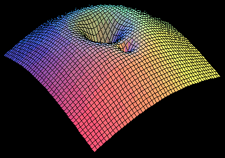
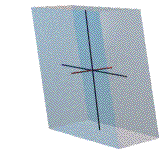

Evolution of Quantum Waves: Numerical and Physical Aspects
of and beyond BEC
Dr. Mark Edwards (Physics), Dr. Cheng Zhang (ME) and Dr. Shi-Jun
Zheng (Math)
Goal: To
develop PDE solver
and
library on the network
Scope:
The Scientific Computation & Numerical PDE group conducts
research that highlights the connections between physics, engineering
and mathematical modeling. Our group promotes collaborations between a
variety of closely-related areas whose methods are based on analytical
theory and computational algorithms, with the support of simulations as
well as experiments.
Our group organizes a series of
joint seminars, colloquiums, lectures,
and workshops, and publishes research in high-quality peer-reviewed
journals. We also offer graduate courses, direct theses, and expose
graduate and undergraduate students to the frontier research in this
challenging field.
Ring BEC and GP equation with electromagnetic fields
Quantum mechanics is the
foundation of modern physics in the last
century as classical mechanics for Newton's physics in the nineteen's
century. The suspicion on QM has been vanishing as
more and more evidence to verify the solid and
rigor of the theory. This project is to further make
quantum more accessible and available to practical applications,
meanwhile to make the abstract theory more valid and true so it Exists
in daily people's life.
Analytical solution and design for the local and global existence
and uniqueness as well as scattering

Time-splitting pseudo-spectral algorithm to reconstruct standing
waves, solition using NLS with trapping potential and nonlinear
perturbation.
Installation
OpenFOAM
An open-source C++ library package, OpenFOAM (Open Field Operation
and Manipulation) is being used to develop solver for the
non-linear Schrödinger and Navier-Stokes. OpenFOAM provides an open
development platform for solving PDEs in parallel mode using finite
volume method.
OpenFOAM has a large user base across many areas of engineering and
science, from both academic and industrial organizations.
ComSol.multiphysics also has information on Femlab solving PDEs (based on Matlab 2d/3d)
Rediscover
further properties including quantized superfluidity, vortex, plasmer
and
superconductivity
Simulation
of certain dumbell-potential influenced system
that
resembles a routine circuit with R, C and L
Scientific
Computing and Computational Mathematics
Electromagnetic Non-Linear
Schrödinger equations
\(iu_t=\left(-\frac{1}{2}\sum_{j=1}^n (\partial_j -iA_j)^2+V \right)u+ g(|u|^2)u\)
Standard NLS \(
i \partial_t u + \Delta u - \mu |u|^{p-1} u = 0. \)
Gross-Pitaevskii hierarch: The mean field limit of \(N\)-body quantum dynamics is generated by the Hamiltonian
\[ H_N:=-\sum_{j=1}^N \Delta_j+\frac{1}{N}\sum^N_{i<j}V(x_j-x_j) \]
where \(i \partial_t\psi_N= H_N \psi_N \), which leads to the Hartree equation describing the condensate wave function evolution
\[iu_t = -\Delta u+ (V*|u|^2) u\]
FD, FEM and FV LAB
Wave-matter
in ultra-cold dilute gaseous state with
wave link
This project is based on the the NLS that governs statistical quantum
mechanics motivated by current computational and experimental physics,
which has been conducted in GSU and NIST labs. It requires both
mathematical tools and techniques as well as computational physics.
Bose-Einstein condensation has developed into an tremendously important
branch of modern physics with progress and results that has been
challenged by mathematical conjecture and physical modeling. Our
group aims to use state of the art method to treat the NLS system in
various context, pertubative, variational, geometric and probabilistic.
Analytically our approach and theory rely on the dispersive and
concentration compactness nature of
the equation and therefore Strichartz estimate, Morawetz inequalities
are established in order to obtain local and global wellposedness and
scattering.
Dr. Edwards recently executed a couple of projects with members in the NIST; e.g. using
Lagrange variational method to compute efficiently the ring-shaped
BEC. Following that Edwards proposed dumbell-shaped potential to
simulate the analogue experiment fulfiled in NIST. The atoms are
23^Na in a setting that involves femion and boson atoms. The
ring-BEC can be used to make sensoring navigation system, the dumbell
potential to make atom circuit. They all immitate the classical
system but have profound far-reaching applications in e.g. information
technology, green energy and so on, which are New that are non-existing before.
Dr. Zhang uses parallel computing to further study and compare these
numerial results via different schemes.
Based on a rigorously derivation of N-body GP equation by
Grillakis-Machedon, Chen et al, also the study of Carles et al in the
semi-classical case. Dr. Zheng obtained LWP and GWP for the NLS
with low regularity for the initial data.
The analysis has natural physical intuition which relies on the
conservation of number of particals, conservation of energy and
momentum and virial identitiy in the magnetic case. He also studies the
profile decompositon of the focusing NLS
with quadratic magnetic potentials, which can describe exactly how the
shape of the initial data affects the finite time blowup of the
solution.
Broader Impact: Our study of the ring BEC model provides
qualitative and quantitative understanding of the special wave matter
phenomena occuring in quantum nature. The proposed project combines the
genuine knowledge and strength from math and physics, which help
promote the interdisciplinary working communicatoins between
mathematicians and physicists and therefore might provide new insights
and tools as well as motivation for two kinds of scientists who are
able to collaborate to solve problems originated from atomic and
condensed matter physics.
Interllectural Merit: The research is highlighted by the expertise of
leading expert in physics. The team consists of senior and young
scientists. The acdemic results are presented in conferences and
seminars. We also invited and discuss with well-known visitors
from Brown, Johns Hopkins, Universty of Illinois, UIUC and Chicago,
University of Minnesota,
University of Maryland. This project is supported by the College
of Science and Mathematics at Georgia Southern University. The faculty
members teach and train graduate and undergraduate students that
resulted in some publications in peer-reviewd professional journals and
proceeding. The working experience with faculty and students
serve as an example for inspiring and continuing teaching and learning
for the young generation in order to build a more educated region in
the rural of the southern east coast.
GPU
source for PDE solver:
- Basic
PDE Solver Discussion and Sparse Matrix
- Dropbox
- NLS
with
Anisotropical quadratic potential
- Macroscopic state
of the N-body Gross-Pitaevskii equation
- Multiscale
reconstruction with sperical-cylindrical coordinates
- Blowup
and Stability: Multiscal Methods: from transport, Boltzmann,
Euler-Poisson to Schrödinger and Navier-Stokes